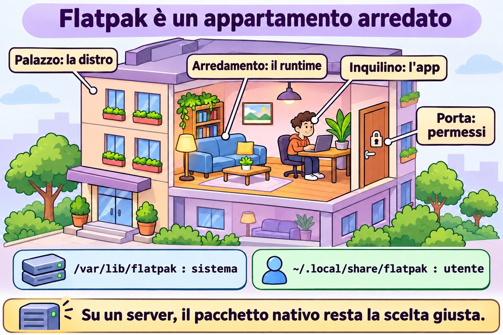
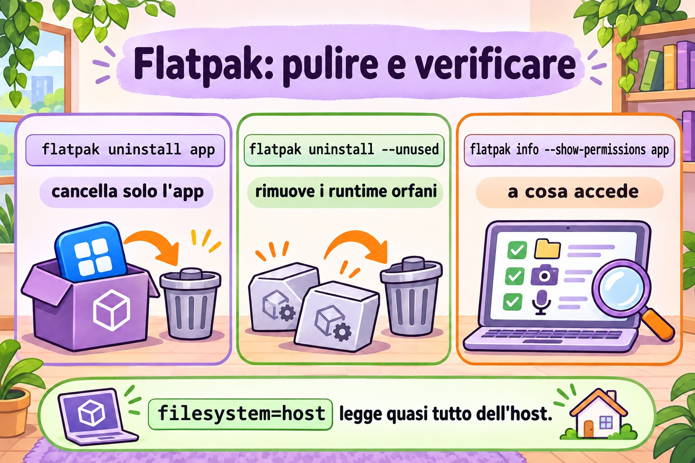

Lezione 6.4 · Flatpak
Finora ogni pacchetto che hai installato era fatto per quella distribuzione: il .rpm di Rocky non gira su Debian e viceversa. Flatpak fa il contrario: la stessa applicazione gira su qualsiasi distribuzione, portandosi dietro le librerie di cui ha bisogno e girando in una scatola isolata. È roba da desktop, ma compare sulle postazioni di lavoro Linux dei clienti, quindi devi saperlo usare. Lezione breve.
Il cuore di questa lezione: sapere cosa sono remote, app e runtime; aggiungere Flathub; cercare, installare, aggiornare e rimuovere; capire la differenza tra installazione di sistema e di utente; e vedere e limitare i permessi di un'app. Il resto è approfondimento.
| Scheda | |
|---|---|
| Modulo | M6 · Software, lezione 4 di 5 |
| Quando | Settimana 11 |
| Alla fine | Usi Flatpak da riga di comando e sai quando è (e quando non è) lo strumento giusto |
| Prerequisiti | Lezione 6.3 |
| Durata | circa 1h30 |
| Snapshot | m6a4-inicio e m6a4-fim su rocky-lab (la parte Debian è facoltativa) |
1 · Riscaldamento
Rispondi prima di leggere.
- Un'app Flatpak usa la
glibcdella tua Rocky o si porta la propria? - Bisogna essere root per installare un Flatpak?
- Su un server senza interfaccia grafica, Flatpak ha senso?
2 · Perché conta
| La richiesta | La risposta sbagliata | Cosa provoca |
|---|---|---|
| "Mi serve la versione nuova dell'app X sulla postazione RHEL, dnf ha solo quella vecchia" | Aggiungere un repository Fedora su RHEL | Mescolanza di versioni e un dnf upgrade che rompe il sistema |
| "Ho disinstallato l'app e il disco non si è liberato" | "Flatpak funziona così" | Runtime orfani che occupano giga |
| "L'utente ha installato un'app e io non la vedo nell'elenco" | Pensare che non sia installata | L'ha installata con --user, nella sua cartella |
| "L'app riesce a leggere tutta la mia home?" | "È una sandbox, non legge niente" | Dipende dai permessi che l'app stessa richiede. Va verificato |
3 · Modello mentale
Flatpak è un appartamento ammobiliato dentro il palazzo. Il palazzo è la tua distribuzione (kernel, rete, utenti). Il runtime sono i mobili standard (librerie di base), condivisi da più appartamenti. L'app è l'inquilino, che porta solo ciò che è suo. Il remote è l'agenzia immobiliare. I permessi dicono da quali porte l'inquilino può uscire.
remote (ex.: flathub)
│ baixa (OSTree, só o que mudou)
▼
/var/lib/flatpak (sistema) ~/.local/share/flatpak (--user)
│
├── runtime org.gnome.Platform//47 ← bibliotecas, compartilhado
└── app org.gnome.Calculator ← o programa
│
▼ flatpak run
┌───── sandbox ───────────────────────────┐
│ /usr = runtime /app = o app │
│ rede, home, X11/Wayland... só se │
│ a permissão deixar │
└──────────────────────────────────────┘
kernel e usuários: os do hostLa risposta alla prima domanda è nel disegno: dentro la scatola, /usr è quello del runtime. L'app non vede mai le librerie di Rocky.


4 · L'essenziale
Vocabolario
| Termine | Cos'è |
|---|---|
| Remote | Repository Flatpak. Il più comune è Flathub. Su RHEL c'è il remote rhel, di Red Hat |
| App ID | Nome in DNS invertito: org.gnome.Calculator, org.mozilla.firefox |
| Runtime | Insieme di librerie di base (org.freedesktop.Platform, org.gnome.Platform, org.kde.Platform), con versione. Molte app usano lo stesso |
| Ref | Indirizzo completo: app/org.gnome.Calculator/x86_64/stable |
| Installazione di sistema | /var/lib/flatpak, per tutti gli utenti, richiede root (o polkit) |
| Installazione utente | --user, in ~/.local/share/flatpak, solo per te, senza root |
| Dati dell'app | ~/.var/app/<App ID>/: configurazione e cache di ogni utente |
Comandi
| Voglio... | Comando |
|---|---|
| Installare Flatpak | sudo dnf install flatpak / sudo apt install flatpak |
| Aggiungere Flathub | sudo flatpak remote-add --if-not-exists flathub https://dl.flathub.org/repo/flathub.flatpakrepo |
| Vedere i remote | flatpak remotes |
| Cercare | flatpak search calculadora (la ricerca in inglese funziona meglio) |
| Elencare cosa offre un remote | flatpak remote-ls flathub --app |
| Installare | sudo flatpak install flathub org.gnome.Calculator |
| Elencare gli installati | flatpak list --app / flatpak list --runtime |
| Dettagli | flatpak info org.gnome.Calculator |
| Eseguire | flatpak run org.gnome.Calculator |
| Aggiornare tutto | sudo flatpak update |
| Rimuovere | sudo flatpak uninstall org.gnome.Calculator |
| Rimuovere i runtime orfani | sudo flatpak uninstall --unused |
| Cronologia | flatpak history |
| Vedere i permessi | flatpak info --show-permissions APP |
| Limitare un permesso | flatpak override --user --nofilesystem=home APP |
| Disattivare un remote | sudo flatpak remote-modify --disable flathub |
Senza --user e senza --system, il valore predefinito è sistema. Per usare --user, anche il remote deve esistere nell'ambito dell'utente (flatpak remote-add --user ...).
Permessi (la "sandbox")
L'app dichiara ciò che vuole: rete (network), schermo (x11, wayland), audio (pulseaudio), file (filesystem=home, filesystem=host), dispositivi (devices=all). Flatpak concede ciò che è dichiarato. La sandbox protegge solo quanto lo permette quell'elenco. Un'app con filesystem=host legge quasi tutto ciò che leggi tu.
flatpak override modifica questo per singola app, per te (--user) o per tutti (sudo flatpak override). flatpak override --show APP mostra cosa è stato cambiato, e --reset annulla. Nell'interfaccia grafica, l'app Flatseal fa la stessa cosa.
Flatpak, Snap e AppImage
| Flatpak | Snap | AppImage | |
|---|---|---|---|
| Chi lo spinge | Comunità, Red Hat, GNOME, KDE | Canonical (Ubuntu) | Nessuno in particolare |
| Store | Più remote (Flathub il più grande) | Uno solo, di Canonical | Nessuno, è un file |
| Installazione | flatpak install | snap install | Scarichi, chmod +x, esegui |
| Isolamento | Sì, tramite permessi | Sì, AppArmor | No |
| Aggiornamento | flatpak update | Automatico | Manuale |
| Focus | Desktop | Desktop e server | Desktop |
Rocky × Debian
Flatpak è identico su entrambe: stessi comandi, stessi percorsi, stesso Flathub. Cambia solo l'installazione di flatpak stesso (dnf o apt) e il remote già pronto: nessuno su Rocky e su Debian, rhel su RHEL. Su Ubuntu, quello già pronto è Snap.
5 · Lab guidato
Passo 0 · Snapshot e cartella. Su Proxmox: qm snapshot 201 m6a4-inicio. Su rocky-lab: mkdir -p ~/lab64 && cd ~/lab64.
Passo 1 · Installare Flatpak e vedere che non c'è nessun remote.
sudo dnf install -y flatpak
flatpak --version
flatpak remotesL'elenco è vuoto (o contiene solo remote del fornitore). Senza remote, non c'è da dove installare.
Passo 2 · Aggiungere Flathub e guardare il catalogo.
sudo flatpak remote-add --if-not-exists flathub https://dl.flathub.org/repo/flathub.flatpakrepo
flatpak remotes -d
flatpak remote-ls flathub --app | wc -l
flatpak search calculator | headIl .flatpakrepo è un piccolo file con l'URL e la chiave GPG del remote. È l'equivalente di epel-release della lezione scorsa.
Passo 3 · Installare e vedere arrivare il runtime.
sudo flatpak install -y flathub org.gnome.Calculator
flatpak list --app
flatpak list --runtime
flatpak info org.gnome.CalculatorNota che sono arrivati due o più elementi: l'app e il runtime (e le estensioni, come le traduzioni). La prima volta il runtime è la parte grossa del download. La prossima app che usa lo stesso runtime arriva leggera. Nella riga Runtime: di flatpak info c'è quello che usa.
Passo 4 · Entrare nella scatola. rocky-lab non ha uno schermo, quindi il normale flatpak run fallirebbe per mancanza di display. Invece, apri una shell dentro la sandbox dell'app:
flatpak run --command=sh org.gnome.CalculatorUna volta dentro:
cat /etc/os-release | head -3
ls /app/bin
ls /usr/lib64 2>/dev/null | head -3; ls /usr/lib | head -3
id
ls ~
exitL'os-release non è quello di Rocky: è quello del runtime. /app è l'app. id mostra il tuo vero utente (la sandbox non è un'altra macchina, kernel e utenti sono quelli dell'host). ls ~ mostra solo ciò che il permesso lascia vedere.
Passo 5 · Permessi e override.
flatpak info --show-permissions org.gnome.Calculator
flatpak override --user --unshare=network org.gnome.Calculator
flatpak override --user --show org.gnome.Calculator
ls ~/.local/share/flatpak/overrides/
flatpak override --user --reset org.gnome.CalculatorL'override è solo un file di testo nella tua cartella. --reset cancella le modifiche.
Passo 6 · Installazione utente, senza root.
flatpak remote-add --user --if-not-exists flathub https://dl.flathub.org/repo/flathub.flatpakrepo
flatpak remotes
flatpak install --user -y flathub org.gnome.Calculator
flatpak list --app
ls ~/.local/share/flatpak/app/Ora la colonna Installation mostra la stessa app due volte: system e user. Sono copie indipendenti.
Passo 7 · Cronologia, aggiornamento e rimozione pulita.
flatpak history | tail
sudo flatpak update -y
flatpak uninstall --user -y org.gnome.Calculator
sudo flatpak uninstall -y org.gnome.Calculator
flatpak list --runtime
sudo flatpak uninstall --unused -y
flatpak uninstall --user --unused -y
flatpak list --runtime
ls ~/.var/app/ 2>/dev/nullDopo aver rimosso l'app, il runtime resta lì finché non usi --unused. E restano anche i dati dell'utente in ~/.var/app/ (per quello esiste --delete-data).
Passo 8 (facoltativo) · debian-lab. Esegui sudo apt install -y flatpak, poi lo stesso remote-add del Passo 2 e flatpak remote-ls flathub --app | wc -l. Il numero è lo stesso: il catalogo non dipende dalla distribuzione.
Pulizia
Flathub può restare configurato in entrambi gli ambiti. Rimuovi solo il remote utente, che non serve più: flatpak remote-delete --user flathub.
Decidi 1
Un collega vuole jq su un server Rocky di produzione, senza interfaccia grafica, e propone di installarlo via Flatpak "perché è isolato". Cosa fai?
A) Flatpak, è più sicuro. B) dnf install jq, che è nel repository di Rocky. C) Scarica il binario da GitHub e lo mette in /usr/local/bin.
Scegli un'opzione prima di continuare.
| Se hai scelto | Risultato | Perché |
|---|---|---|
| A | Potrebbe nemmeno esistere così, e se esiste porta con sé un runtime intero | Flatpak è fatto per le app desktop. Su un server ottieni un secondo sistema di pacchetti da mantenere e verificare |
| B | Giusto | Pacchetto della distribuzione, firmato, aggiornato insieme al resto con dnf upgrade |
| C | Funziona, senza aggiornamenti | Nessuno si ricorda di aggiornare il binario isolato quando esce una correzione |
Da ricordare: su un server, prima il pacchetto della distribuzione. Flatpak è per le app grafiche su una postazione di lavoro.
Decidi 2
Su una postazione RHEL condivisa, un'utente senza sudo ha bisogno di un editor di immagini che esiste solo su Flathub. Nessun altro lo userà. Cosa fai?
A) Installa con sudo flatpak install per tutti. B) Le lascia installare con --user, nella sua cartella. C) Le dà sudo così può installare.
Scegli un'opzione prima di continuare.
| Se hai scelto | Risultato | Perché |
|---|---|---|
| A | Funziona, e diventi tu il responsabile degli aggiornamenti | L'app compare per tutti, senza necessità |
| B | Giusto | È per questo che esiste l'installazione utente: senza root e senza toccare il sistema. Il remote utente va aggiunto prima |
| C | La peggiore di tutte | Root completo per installare un'app |
Da ricordare: --user è il modo di dare autonomia senza dare sudo.
6 · Rompi e ripara
Guasto 1 · "Non trovo l'app" nell'ambito utente
Su rocky-lab, senza remote utente (l'hai rimosso nella Pulizia):


flatpak install --user flathub org.gnome.CalculatorSintomo: errore che dice che il remote flathub non esiste o che nulla corrisponde al nome, anche se sudo flatpak install funziona.
Diagnosi: flatpak remotes mostra la colonna dell'ambito: flathub è solo in system.
Riparazione: flatpak remote-add --user --if-not-exists flathub <url>, oppure installare nel sistema. Dopo il test, rimuovi di nuovo.
Nella vita reale: è il dubbio numero uno di chi inizia con --user. I due ambiti sono mondi separati: remote, app e runtime.
Guasto 2 · Disco che non si libera
Installa e rimuovi un'app senza --unused:
sudo flatpak install -y flathub org.gnome.Calculator
sudo flatpak uninstall -y org.gnome.Calculator
du -sh /var/lib/flatpakSintomo: l'app è sparita, ma la cartella resta grande.
Diagnosi: flatpak list --runtime mostra i runtime che nessuno usa più.
Riparazione: sudo flatpak uninstall --unused, e ricontrolla con du -sh.
Nella vita reale: sulle postazioni vecchie, i runtime datati (versioni precedenti di GNOME o KDE) sommano molti giga. flatpak update di solito avvisa quando un runtime arriva a fine vita.
Guasto 3 · Remote disattivato (narrativa)
Qualcuno ha eseguito flatpak remote-modify --disable flathub durante una manutenzione e se n'è dimenticato. Settimane dopo, flatpak update dice che non c'è nulla da aggiornare e install non trova niente.
Diagnosi: flatpak remotes -d mostra il remote con l'opzione disabled.
Riparazione: sudo flatpak remote-modify --enable flathub. È lo stesso schema di enabled=0 della lezione 6.3: disattivato non dà errore, sta solo zitto.
7 · Trappole
| Trappola | Cosa succede | Come evitarla |
|---|---|---|
| Pensare che la sandbox sia una protezione totale | Un'app con filesystem=host legge quasi tutto | flatpak info --show-permissions prima di fidarti |
| Rimuovere l'app e dimenticare il runtime | Disco pieno di runtime orfani | flatpak uninstall --unused |
Mescolare --user e sistema | L'app "sparisce", "si duplica" o non si aggiorna | Guarda la colonna Installation in flatpak list |
flatpak update solo come utente | Aggiorna l'ambito utente e non quello di sistema (o il contrario) | sudo flatpak update per il sistema, flatpak update --user per il tuo |
dnf upgrade non aggiorna Flatpak | App obsolete per mesi | Flatpak ha un aggiornamento proprio. Includilo nella procedura di manutenzione |
| Flatpak su un server | Secondo sistema di pacchetti da mantenere | Pacchetto della distribuzione o container |
| Sbagliare l'App ID | install non trova niente o chiede quale | Copia l'ID da flatpak search |
8 · Quiz
Rispondi senza guardare. Le soluzioni sono alla fine della lezione.
- Cos'è un runtime e perché non sparisce quando rimuovi l'app?
- Dove si trova un'app installata con
--user? E consudo? - Hai rimosso un'app con
flatpak uninstall. Dove sono rimaste le impostazioni dell'utente, e come le avresti cancellate insieme? - Come scopri se un'app può accedere alla rete e alla tua home?
- Perché
dnf upgradenon basta su una postazione con app Flatpak? - Which command adds the Flathub remote system-wide? a)
flatpak add flathub URLb)flatpak remote-add flathub URLc)dnf config-manager --add-repo URLd)flatpak install flathub
9 · Promemoria
Da sapere a memoria:
| Voglio... | Comando |
|---|---|
| Vedere i remote | flatpak remotes |
| Aggiungere un remote | sudo flatpak remote-add --if-not-exists NOME URL.flatpakrepo |
| Cercare | flatpak search TERMO |
| Installare / rimuovere | sudo flatpak install REMOTE APPID / sudo flatpak uninstall APPID |
| Elencare | flatpak list --app |
| Aggiornare | sudo flatpak update |
| Pulire gli orfani | sudo flatpak uninstall --unused |
Da consultare:
| Voglio... | Comando |
|---|---|
| Catalogo del remote | flatpak remote-ls REMOTE --app |
| Dettagli e runtime | flatpak info APPID |
| Permessi | flatpak info --show-permissions APPID |
| Limitare / vedere / annullare | flatpak override --user --nofilesystem=home APPID / --show / --reset |
| Shell dentro la sandbox | flatpak run --command=sh APPID |
| Cronologia | flatpak history |
| Attivare / disattivare un remote | sudo flatpak remote-modify --enable / --disable REMOTE |
| Rimuovere un remote | sudo flatpak remote-delete REMOTE |
| Rimuovere con i dati | flatpak uninstall --delete-data APPID |
| Riparare l'installazione | sudo flatpak repair |
| Percorsi | /var/lib/flatpak, ~/.local/share/flatpak, ~/.var/app/ |
Flashcard:
- Remote, app, runtime → agenzia immobiliare, inquilino, mobili condivisi.
- Ambito predefinito → sistema.
--userrichiede un remote utente. - La sandbox protegge tutto? → Solo ciò che i permessi non liberano.
- Hai rimosso l'app, il disco non si è liberato →
flatpak uninstall --unused. - Server senza schermo → pacchetto della distribuzione, non Flatpak.
10 · Checklist e chiusura
- [ ] Spiego remote, app, runtime e ref
- [ ] Aggiungo Flathub e installo, elenco, aggiorno e rimuovo un'app
- [ ] Distinguo l'installazione di sistema da quella utente
- [ ] Vedo e limito i permessi con
info --show-permissionseoverride - [ ] Pulisco i runtime orfani
- [ ] So quando non usare Flatpak
Ultimo esercizio, senza guardare la lezione: su rocky-lab, installa come utente (senza sudo) una qualsiasi piccola app di Flathub, mostra quale runtime usa, apri una shell al suo interno e di' di quale distribuzione è /usr. Poi rimuovi l'app, il runtime orfano e il remote utente.
Reboot e verifica:
sudo reboot
flatpak remotes
flatpak list
sudo flatpak update
sudo dnf checkflatpak list deve risultare vuoto o contenere solo ciò che hai deciso di tenere. dnf check resta pulito: Flatpak non tocca il database di rpm.
Snapshot di fine (su Proxmox):
qm snapshot 201 m6a4-fim11 · Nella vita reale
Missione, sola lettura. Su una postazione Linux (tua o di qualcuno che lo autorizza) che usa Flatpak, esegui solo:
flatpak remotes -d
flatpak list --columns=application,version,installation,origin
flatpak list --runtime --columns=application,branch
flatpak history | tail -20
du -sh /var/lib/flatpak ~/.local/share/flatpak 2>/dev/nullDomande a cui rispondere:
- Quali remote esistono e in quale ambito?
- Quante app di sistema e quante utente?
- Qualche runtime con una versione (branch) vecchia che forse non ha più app che lo usano?
- Quando è stato l'ultimo aggiornamento nella
history? - Scegli un'app ed esegui
flatpak info --show-permissions. Chiedefilesystem=host?
Diario: annota se la postazione ha una procedura che aggiorna Flatpak, o se gira solo dnf/apt.
Domani, senza guardare: scrivi i sei comandi essenziali: remotes, remote-add, search, install, list, uninstall.
12 · Approfondire quando vuoi
- OSTree: il "git per i binari" sotto Flatpak. Spiega perché si scarica solo ciò che è cambiato e perché due app con lo stesso runtime non duplicano lo spazio su disco. Lo stesso OSTree c'è in Fedora Silverblue e in RHEL for Edge.
- Remote privati: un'azienda può pubblicare le proprie app su un remote interno, oppure usare il remote
rheldi Red Hat con la registrazione. flatpak-buildere manifest: come si impacchetta un'app Flatpak.- Portali (xdg-desktop-portal): come l'app chiede di aprire un file senza avere accesso a tutta la home.
- Snap a fondo:
snap list,snap refresh --hold, i mountsquashfsche compaiono inlsblksu Ubuntu. - Aggiornamento automatico: GNOME Software e KDE Discover aggiornano Flatpak da soli. In una flotta, un timer di systemd con
flatpak update -y.
DeepTutor (http://10.1.0.149:3782, KB "Curso Linux Sysadmin"):
!explica a diferença entre runtime e app no Flatpak!feynman por que o sandbox do Flatpak não é proteção total!quiz Aula 6.4, 5 perguntas sobre Flatpak
Soluzioni commentate
Riscaldamento
- Si porta la propria. Dentro la sandbox,
/usrè quello del runtime, con la suaglibc. Per questo la stessa app gira su qualsiasi distribuzione. Il kernel, quello sì, è dell'host. - Non necessariamente. L'installazione di sistema richiede root (o l'autorizzazione tramite polkit in una sessione grafica). Con
--user, qualsiasi utente installa nella propria cartella. - Quasi mai. Flatpak è fatto per le app grafiche. Su un server, usa il pacchetto della distribuzione o un container. L'eccezione è una postazione di lavoro, come in questa lezione.
Quiz
- Il runtime è l'insieme di librerie di base che l'app usa (per esempio
org.gnome.Platform). È condiviso: un'altra app può dipenderne. Per questo la rimozione dell'app non porta via il runtime, e a pulire ci pensaflatpak uninstall --unused. - Con
--user:~/.local/share/flatpak/. Consudo(ambito di sistema, quello predefinito):/var/lib/flatpak/. - In
~/.var/app/<App ID>/, nella cartella di ogni utente che ha usato l'app. Per cancellarle insieme:flatpak uninstall --delete-data APPID. flatpak info --show-permissions APPID. Cercanetworkinsharedehomeohostinfilesystems. Gli override applicati si vedono conflatpak override --show APPID.- Perché le app Flatpak non sono nel database di rpm né nei repository di dnf. Hanno un remote proprio e un aggiornamento proprio:
flatpak update. - b)
flatpak remote-add flathub URL(consudoe, in pratica,--if-not-exists). La a) non esiste. La c) è per i repository RPM. La d) installa, ma funziona solo se il remote esiste già.